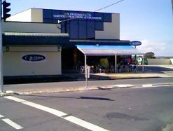
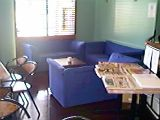

|
Nathan and Jon, a cast of 1000 toffee cream slices and Nathan's lady friend Sarah decided to take a small holiday in the Hebrides this month. Jon retired to a hotel room with the cream slices (predictably) and Nathan and Sarah went out for a jog and weren't seen again for a good five weeks. Whilst Jamie was out searching high and low for the rest of the editorial team, Jeff Braine was sent out with his guitar to busk around Brisbane (to recover losses after the Gratuitous Scantily Clad Girlie lost YS3 nearly a whole reader). Jeff, being a lazy sod, decided it was easier to sit and strum in the corner of a cafe with his mates Shane and Susie rather than traipse around wearing out the soles of his flipflops. |
 |
|
While he was there, he made notes on several aspects of the place: How Does It Work?
|
|
|  |
The Place: C@fe Globec, Carina, Queensland, Australia Cheapest Single Item: Toast - $2.40 Most Serious Item: T-Bone Steak and chips - $13 |
The Meals:Jeff - Rump Steak, Chips and Pepper Sauce and a double-shot muggacino coffee Shane - "Net Dog" (Hot dog and chips) and a muggacino Susan - Potato Wedges and a muggacino Ambience:Jeff: Bright and clean despite the crappy day going on outside. There's a general buzz of conversation and the sounds of Stevie Wonder singing "Superstition" on the stereo. Everyone seems happy, either munching, talking or playing Half-Life on one of the computers. Every Saturday night, this cool bloke named... er... anyway he does a half hour stint singing songs about wanting to be trees, dandruff and sultanas and things. 8/10Shane: (pretends to play the piano on the table whilst doing impressions of Stevie Wonder) 9/10 Susan: It's clean, tidy and modern looking. The other people in the cafe are chatty and didn't even frown at Shane's singing. The staff are polite and friendly despite the motley crew at this table talking to them about cheese horses (with bruised brie hooves), white holes and whelks (!?) 10/10 Food Quality:Jeff: My steak is done just how I like it. The chips are crispy and not too greasy, and the pepper sauce is... er... peppery. The coffee is pretty perfect too - nice and strong, nice foamy froth and no horrible unrecognisable gritty bits - 10/10Shane: (wears a froth and chocolate moustache) Mmmph! - 9/10 Susan: Lovely! Yum-meee! - 10/10 Staff:Jeff: The staff are friendly and like to chat when they're not busy. For some reason the guy behind the counter, the lady in the kitchen and the guy looking after the computers keep smiling and waving at us! 9/10Shane: The staff are (sips coffee) fair dinkum (slurp) people, y'know. They don't mind our sometimes obscure orders (what the heck is this chip butty Jeff keeps ordering?), our teasing, and even join in with our unscheduled (and usually unscripted) sing-alongs. 9/10 Susan: Hi Mum! Hi Dad! Hi Dave - how's my little bro? (Oh what a giveaway - Jeff) 10/10 Value For Money:Jeff: Where in England could you get a really nicely done steak in pepper sauce and chips AND a double strength frothy coffee for about six quid? With free entertainment on a Saturday night? As for in Australia, the food is still pretty cheap considering its quality and quantitiy. 10/10Shane: I'm currently working two jobs to pay for my tab here. No, only joking. The value's great considering the quality of service and standard of the meals. No grumbles here. 9/10 Susan: Family discount. 'Nuff said. 10/10 Overall:Jeff: 9/10Shane: 9/10 Susan: 10/10 Honestly, I leave you lot alone for five weeks and what happens? You start reviewing food! I don't know, you just can't get the staff these days. Tch. - Ed. |
|
Back to Contents